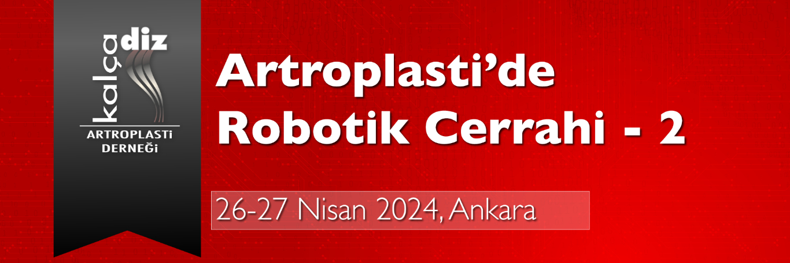

Sayın Meslektaşlarımız,
Dünyada giderek artan sağlıkta dijital teknolojilerin kullanımı ortopedi ve travmatolojide özellikte kalça ve diz artroplastisi alanında yaşanmaktadır. Bu nedenle Kalça Diz Artroplasti Derneği olarak 26-27 Nisan 2024 tarihinde Ankara CP Otel’de 2. Artroplasti’de Robotik Cerrahi toplantısını gerçekleştireceğiz. Amacımız temel artroplasti eğitimini almış araştırma görevlilerine artroplastide robot ve navigasyon kullanım alanlarını avantaj ve dezavantajlarını interaktif bir şekilde tartışmaktır.
Toplantımızda iki gün boyunca toplam dört robot yardımlı artroplasti ameliyatı yapılması planlanmaktadır. (Robotik total diz artroplastisi (2), robotik unikondiler artroplasti ve robotik total kalça artroplastisi). Çankaya Hastanesi ameliyathanelerinden naklen yayınlanacak bu cerrahi uygulamalar sırasında katılımcılar çeşitli ayrıntıları tartışma imkanı bulacaklardır.
Düzenleyeceğimiz Artroplasti’ de Robotik Cerrahi kursunda sizleri de aramızda görmek bizi mutlu kılacaktır.
Saygı ve sevgilerimizle bilgilerinize sunarız.
Toplantı Başkanı: Prof. Dr. Kerem Başarır
Toplantı Sekreteri: Prof.Dr. Ömür Çağlar
Kalça Diz Artroplasti Derneği Başkanı:Prof. Dr. Emre Toğrul

